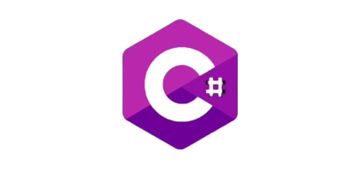
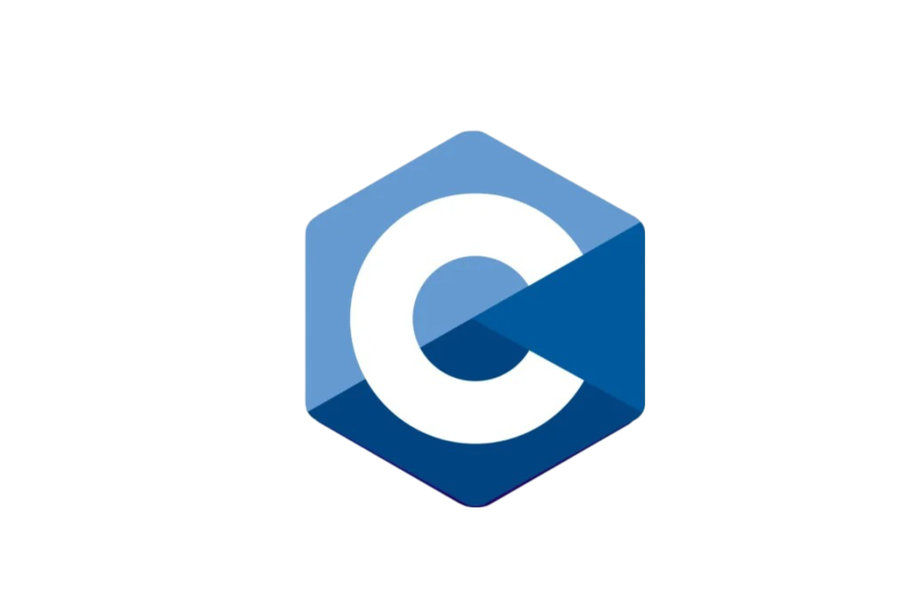

Python es un lenguaje de programación interpretado, de alto nivel y con una sintaxis clara y legible. Es ampliamente utilizado en desarrollo web, ciencia de datos, automatización y más. Su simplicidad y flexibilidad lo hacen ideal tanto para principiantes como para expertos.
Comentarios
JavaScript: El Lenguaje del Navegador
Fecha: 03/09/2024
JavaScript es el lenguaje de programación que da vida a las páginas web. Permite a los desarrolladores crear interfaces interactivas y dinámicas. Aunque tradicionalmente se usa en el frontend, también puede utilizarse en el backend con Node.js.
Comentarios
Java: Un Clásico de la Programación
Fecha: 06/09/2024
Java es un lenguaje de programación orientado a objetos que ha sido fundamental en el desarrollo de aplicaciones empresariales y móviles. Su principio de "escribir una vez, ejecutar en cualquier lugar" ha sido un gran atractivo para los desarrolladores durante décadas.
Comentarios
C++: El Poder de la Programación de Sistemas
Fecha: 15/09/2024
C++ es un lenguaje de programación que ofrece control detallado sobre los recursos del sistema. Es ampliamente utilizado en el desarrollo de sistemas, videojuegos y aplicaciones de alto rendimiento debido a su eficiencia y flexibilidad.
Comentarios
Ruby: Simplicidad y Productividad
Fecha: 20/09/2024
Ruby es un lenguaje de programación dinámico y reflexivo que se enfoca en la simplicidad y la productividad. Su popularidad creció con el framework Rails, que facilita el desarrollo de aplicaciones web de manera rápida y eficiente.
Comentarios
Swift: El Futuro del Desarrollo en iOS
Fecha: 25/09/2024
Swift es el lenguaje de programación creado por Apple para el desarrollo de aplicaciones en iOS y macOS. Su diseño moderno y seguro busca mejorar la velocidad y la eficiencia del desarrollo de software para dispositivos Apple.
Comentarios

C#: Potencia y Flexibilidad en el Desarrollo de Aplicaciones
Fecha: 30/09/2024
C# es un lenguaje de programación desarrollado por Microsoft que combina la potencia de C++ con la simplicidad de Visual Basic. Es ampliamente utilizado en el desarrollo de aplicaciones para la plataforma .NET, incluyendo aplicaciones de escritorio, web y móviles.
Comentarios

C: El Lenguaje Fundacional de la Programación
Fecha: 05/10/2024
C es un lenguaje de programación fundamental que ha sentado las bases para muchos otros lenguajes. Su eficiencia y control sobre los recursos del sistema lo hacen ideal para el desarrollo de sistemas operativos, controladores y software de bajo nivel.
Comentarios
PHP: El Lenguaje del Desarrollo Web Dinámico
Fecha: 10/10/2024
PHP es un lenguaje de programación del lado del servidor diseñado para el desarrollo web. Se integra fácilmente con bases de datos y es ampliamente utilizado para crear sitios web y aplicaciones web dinámicas y personalizadas.
.png)
.png)
.png)